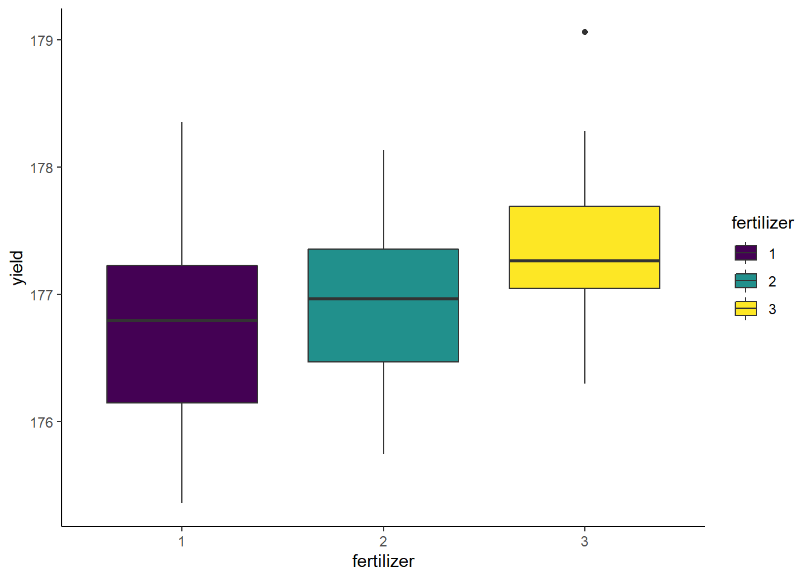
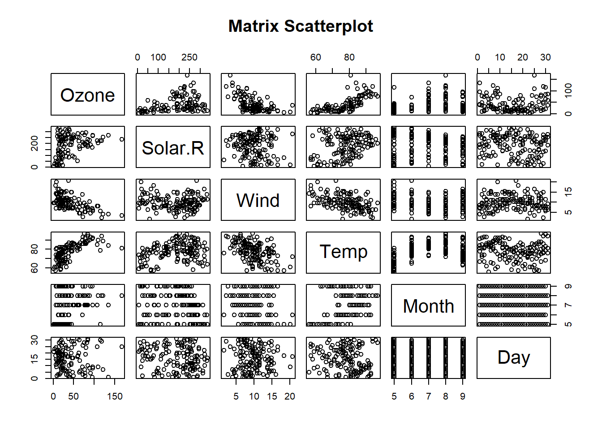
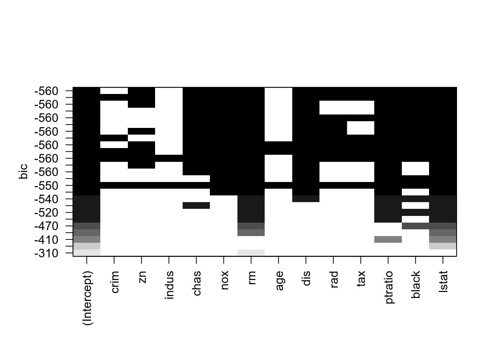

“Models should be as simple as possible, but not more so.” - Albert Einstein
Analysis of Variance (ANOVA) is a statistical technique, commonly used to study differences between two or more group means. ANOVA test is centred on the different sources of variation in a typical variable. ANOVA in R primarily provides evidence of the existence of the mean equality between the groups. This statistical method is an extension of the t-test. It is used in a situation where the factor variable has more than one group. 1
There are many situations where you need to compare the mean between multiple groups. For instance, you may want to know the concentration of a certain chemical under 3 different treatments. The ANOVA test can tell if the 3 groups have similar concentration.
To clarify if the data comes from the same population, you can perform a one-way analysis of variance (one-way ANOVA hereafter). This test, like any other statistical tests, gives evidence whether the H0 hypothesis can be accepted or rejected.
Hypothesis in one-way ANOVA test:
In other words, the H0 hypothesis implies that there is not enough evidence to prove the mean of the group (factor) are different from another. This test is similar to the t-test, although ANOVA test is recommended in a situation with more than 2 groups.
Let’s use the crop dataset to implement the one-way ANOVA test. The dataset contains 96 rows and 4 variables:
yield: crop yielddensity: type of soil density: factor level: 1 and 2block: blocking method used: factor level: 1, 2, 3, and 4fertilizer: type of fertilizer used: factor level: 1, 2, and 3In R import the data:
library(tidyr)
library(dplyr)
library(ggplot2)
# Read csv
crop_data <- read.csv("crop.data.csv", header=T)
# Change to factor type
crop_data_tbl <- as_tibble(crop_data) %>%
mutate(fertilizer = factor(fertilizer, ordered = TRUE)) %>%
mutate(block = factor(block, ordered = TRUE)) %>%
mutate(density = factor(density, ordered = TRUE))
# Quick check
glimpse(crop_data_tbl)## Rows: 96
## Columns: 4
## $ density <ord> 1, 2, 1, 2, 1, 2, 1, 2, 1, 2, 1, 2, 1, 2, 1, 2, 1, 2, 1, 2, 1, 2, 1, 2, 1, ...
## $ block <ord> 1, 2, 3, 4, 1, 2, 3, 4, 1, 2, 3, 4, 1, 2, 3, 4, 1, 2, 3, 4, 1, 2, 3, 4, 1, ...
## $ fertilizer <ord> 1, 1, 1, 1, 1, 1, 1, 1, 1, 1, 1, 1, 1, 1, 1, 1, 1, 1, 1, 1, 1, 1, 1, 1, 1, ...
## $ yield <dbl> 177.2287, 177.5500, 176.4085, 177.7036, 177.1255, 176.7783, 176.7463, 177.0...Our objective is to test the following assumption:
In other words, we want to know if there is a statistical difference between the mean of the crop yeild according to the type of fertilizer.
First, we can check the level of the fertilizer with the following code:
## [1] "1" "2" "3"We can compute the mean and standard deviation:
crop_data_tbl %>%
group_by(fertilizer) %>%
summarise(
count = n(),
mean_yield = mean(yield, na.rm = TRUE),
sd_yield = sd(yield, na.rm = TRUE)
)## `summarise()` ungrouping output (override with `.groups` argument)## # A tibble: 3 x 4
## fertilizer count mean_yield sd_yield
## <ord> <int> <dbl> <dbl>
## 1 1 32 177. 0.685
## 2 2 32 177. 0.574
## 3 3 32 177. 0.599We can also graphically check if there is a difference between the distribution:
ggplot(crop_data_tbl, aes(x = fertilizer, y = yield, fill = fertilizer)) +
geom_boxplot() +
theme_classic()
Finally, we run the one-way ANOVA test with the command aov.
## Df Sum Sq Mean Sq F value Pr(>F)
## fertilizer 2 6.07 3.0340 7.863 7e-04 ***
## Residuals 93 35.89 0.3859
## ---
## Signif. codes: 0 '***' 0.001 '**' 0.01 '*' 0.05 '.' 0.1 ' ' 1The p-value is lower than the usual threshold of 0.05. You are confident to say there is a statistical difference between the groups, indicated by the "***".
The one-way ANOVA test does not inform which group has a different mean. Instead, you can perform a Tukey test with the function TukeyHSD().
## Tukey multiple comparisons of means
## 95% family-wise confidence level
##
## Fit: aov(formula = yield ~ fertilizer, data = crop_data_tbl)
##
## $fertilizer
## diff lwr upr p adj
## 2-1 0.1761687 -0.19371896 0.5460564 0.4954705
## 3-1 0.5991256 0.22923789 0.9690133 0.0006125
## 3-2 0.4229569 0.05306916 0.7928445 0.0208735A two-way ANOVA test adds another group variable to the formula. It is identical to the one-way ANOVA test. Hypothesis in two-way ANOVA test:
Let’s add block variable to the model. This variable indicates the blocking method used in the land. Now we are interested to see if there is a statistical dependence between the fertilizer type (fertilizer) and blocking method (block).
## Df Sum Sq Mean Sq F value Pr(>F)
## fertilizer 2 6.068 3.0340 9.018 0.000269 ***
## block 3 5.608 1.8693 5.556 0.001522 **
## Residuals 90 30.278 0.3364
## ---
## Signif. codes: 0 '***' 0.001 '**' 0.01 '*' 0.05 '.' 0.1 ' ' 1We can conclude that both fertilizer type (fertilizer) and blocking method (block) are statistically different from 0. We can reject the Null hypothesis and confirm that changing the fertilizer type or the blocking method impact the crop yeilds.
We have used the simple linear regression model in the last section, where we assume a linear relationship between a response variable and a single predictor variable. However, it is rarely the case that a dataset will have a single predictor variable. It is also rarely the case that a response variable will only depend on a single variable. So in this chapter, we will extend our current linear model to allow a response to depend on multiple predictors.
Let’s use the airquality dataset from the datasets package that comes with R. The dataset contains daily ozone concentration, solar radiation, wind speed, and temperature in New York City from May to September. Load the airquality by:
Check the data by
## 'data.frame': 153 obs. of 6 variables:
## $ Ozone : int 41 36 12 18 NA 28 23 19 8 NA ...
## $ Solar.R: int 190 118 149 313 NA NA 299 99 19 194 ...
## $ Wind : num 7.4 8 12.6 11.5 14.3 14.9 8.6 13.8 20.1 8.6 ...
## $ Temp : int 67 72 74 62 56 66 65 59 61 69 ...
## $ Month : int 5 5 5 5 5 5 5 5 5 5 ...
## $ Day : int 1 2 3 4 5 6 7 8 9 10 ...Now we will focus on using three variables, Solar.R, Wind, and Temp, as predictor variables. That is, we would like to model the ozone contraction as a function of solar radiation, wind speed, and temperature. To do so, we will define the following linear model:
\[y_{i} = \beta_{0} + \beta_{1}x_{i1} + \beta_{2}x_{i2} + \beta_{3}x_{i3} + \epsilon_{i}, i = 1,2,3,...,n\]
where \(\epsilon_{i}\) ~ \(N(0, \sigma^{2})\). In this notation, we will define:
Solar.R) of the ith day.Wind) of the ith day.Temp) of the ith day.The data points (\(x_{i1}, x_{i2}, x_{i3}, y_{i}\)) now exist in 4-dimensional space, so instead of fitting a line as we did in the simple linear regression model to the data, we will fit a 3-dimensional space.
Before the linear regression model can be applied, one must verify multiple factors and make sure assumptions are met. Most of all, one must make sure linearity exists between the variables in the dataset. One of the fastest ways to check the linearity is by using scatter plots.

From the above scatter plot we can determine the variables Ozone, Solar.R, Wind, and Temp in the database airquality are in linearity.
In R, the multiple linear regression is done as:
## (Intercept) Wind Temp Solar.R
## -64.34207893 -3.33359131 1.65209291 0.05982059\[y_{i} = -64.34 + -3.33x_{i1} + 1.65x_{i2} + 0.060x_{i3}\] Here we have fitted our model using lm(), however, we have introduced a new syntactical element. The formula Ozone ~ Wind + Temp + Solar.R reads: “model the response variable Ozone as a linear function of Wind, Temp, and Solar.R”. That is, it will estimate an intercept, as well as slope coefficients for Wind, Temp, and Solar.R. We then extract these as we have done before using coef().
The model can be further explored with the summary() function:
##
## Call:
## lm(formula = Ozone ~ Wind + Temp + Solar.R, data = airquality)
##
## Residuals:
## Min 1Q Median 3Q Max
## -40.485 -14.219 -3.551 10.097 95.619
##
## Coefficients:
## Estimate Std. Error t value Pr(>|t|)
## (Intercept) -64.34208 23.05472 -2.791 0.00623 **
## Wind -3.33359 0.65441 -5.094 1.52e-06 ***
## Temp 1.65209 0.25353 6.516 2.42e-09 ***
## Solar.R 0.05982 0.02319 2.580 0.01124 *
## ---
## Signif. codes: 0 '***' 0.001 '**' 0.01 '*' 0.05 '.' 0.1 ' ' 1
##
## Residual standard error: 21.18 on 107 degrees of freedom
## (42 observations deleted due to missingness)
## Multiple R-squared: 0.6059, Adjusted R-squared: 0.5948
## F-statistic: 54.83 on 3 and 107 DF, p-value: < 2.2e-16In the above model, we assume that all the predictor variables are independent of each other. However, such assumption is falwed as we can see from the Matrix Scatterplot that Temp corrlates with Wind.
## [1] -0.4579879Such interaction variables introduce an additional level of regression analysis by allowing researchers to explore the synergistic effects of combined predictors. In R, you can interact two variables by using a colon :.
##
## Call:
## lm(formula = Ozone ~ Wind + Temp + Solar.R + Wind:Temp, data = airquality)
##
## Residuals:
## Min 1Q Median 3Q Max
## -38.888 -11.938 -3.084 8.753 94.235
##
## Coefficients:
## Estimate Std. Error t value Pr(>|t|)
## (Intercept) -245.08368 46.84632 -5.232 8.53e-07 ***
## Wind 14.38471 4.13249 3.481 0.000727 ***
## Temp 3.91373 0.57217 6.840 5.26e-10 ***
## Solar.R 0.06599 0.02152 3.067 0.002745 **
## Wind:Temp -0.22795 0.05259 -4.334 3.34e-05 ***
## ---
## Signif. codes: 0 '***' 0.001 '**' 0.01 '*' 0.05 '.' 0.1 ' ' 1
##
## Residual standard error: 19.61 on 106 degrees of freedom
## (42 observations deleted due to missingness)
## Multiple R-squared: 0.6652, Adjusted R-squared: 0.6526
## F-statistic: 52.66 on 4 and 106 DF, p-value: < 2.2e-16Indeed the interaction term has a signiicant slope, so you may want to include this term in your linear model.
Overfitting a regression model occurs when you attempt to estimate too many parameters from a sample that is too small. Regression analysis uses one sample to estimate the values of the coefficients for all of the terms in the equation. The sample size limits the number of terms that you can safely include before you begin to overfit the model.
Larger sample sizes allow you to specify more complex models. For trustworthy results, your sample size must be large enough to support the level of complexity that is required by your research question. If your sample size isn’t large enough, you won’t be able to fit a model that adequately approximates the true model for your response variable. You won’t be able to trust the results.
You must have a sufficient number of observations for each term in a regression model. Simulation studies show that a good rule of thumb is to have 10-15 observations per term in multiple linear regression. For example, if your model contains two predictors and the interaction term, you’ll need 30-45 observations. However, if the effect size is small or there is high multicollinearity, you may need more observations per term. 2
Let’s demonstrate the idea by adding more fake variables to the linear model.
N <- dim(airquality)[1]
Fake <- array(dim=c(N,10))
airquality_new <- airquality
# Generate some fake observations
for(i in 1:10){
Fake[,i] <- rnorm(N, 0, 1)
}
# Attach to the original data
airquality_new <- cbind(airquality,Fake)
airquality_new <- airquality_new[1:15,]
# Change column names
colnames(airquality_new)[7:16] = paste("Fake",seq(1,10),sep="")
# Fit linear model
fit <- lm(Ozone ~ Fake1 + Fake2 + Fake3 + Fake4 + Fake5 +
Fake6 + Fake7 + Fake8 + Fake9 + Fake10, data = airquality_new)
summary(fit)##
## Call:
## lm(formula = Ozone ~ Fake1 + Fake2 + Fake3 + Fake4 + Fake5 +
## Fake6 + Fake7 + Fake8 + Fake9 + Fake10, data = airquality_new)
##
## Residuals:
## 1 2 3 4 6 7 8 9 11 12 13 14
## 1.5249 0.2891 0.6099 -0.6966 -0.2385 -1.6583 0.1885 1.0927 0.5245 -0.1588 -0.6794 0.8053
## 15
## -1.6032
##
## Coefficients:
## Estimate Std. Error t value Pr(>|t|)
## (Intercept) 27.12340 2.36142 11.486 0.00749 **
## Fake1 -2.71098 1.23444 -2.196 0.15924
## Fake2 4.94982 0.90483 5.470 0.03183 *
## Fake3 8.84294 1.38295 6.394 0.02360 *
## Fake4 8.01408 0.87499 9.159 0.01171 *
## Fake5 4.32409 1.21926 3.546 0.07113 .
## Fake6 -2.21816 1.52356 -1.456 0.28270
## Fake7 4.02040 1.14807 3.502 0.07276 .
## Fake8 0.32597 0.99079 0.329 0.77341
## Fake9 -0.01948 1.08061 -0.018 0.98726
## Fake10 4.96068 1.26699 3.915 0.05947 .
## ---
## Signif. codes: 0 '***' 0.001 '**' 0.01 '*' 0.05 '.' 0.1 ' ' 1
##
## Residual standard error: 2.375 on 2 degrees of freedom
## (2 observations deleted due to missingness)
## Multiple R-squared: 0.9912, Adjusted R-squared: 0.9472
## F-statistic: 22.54 on 10 and 2 DF, p-value: 0.04321You can see the high \(R^{2}\) doesn’t make any sense, as the linear model has no valid observations.
We use Boston Housing Data as an illustrative example. Boston housing data is a built-in dataset in MASS package, so you do not need to download externally. Package MASS comes with R when you installed R, so no need to use install.packages(MASS) to download and install, but you do need to load this package. 3
##
## Attaching package: 'MASS'## The following object is masked from 'package:dplyr':
##
## select## 'data.frame': 506 obs. of 14 variables:
## $ crim : num 0.00632 0.02731 0.02729 0.03237 0.06905 ...
## $ zn : num 18 0 0 0 0 0 12.5 12.5 12.5 12.5 ...
## $ indus : num 2.31 7.07 7.07 2.18 2.18 2.18 7.87 7.87 7.87 7.87 ...
## $ chas : int 0 0 0 0 0 0 0 0 0 0 ...
## $ nox : num 0.538 0.469 0.469 0.458 0.458 0.458 0.524 0.524 0.524 0.524 ...
## $ rm : num 6.58 6.42 7.18 7 7.15 ...
## $ age : num 65.2 78.9 61.1 45.8 54.2 58.7 66.6 96.1 100 85.9 ...
## $ dis : num 4.09 4.97 4.97 6.06 6.06 ...
## $ rad : int 1 2 2 3 3 3 5 5 5 5 ...
## $ tax : num 296 242 242 222 222 222 311 311 311 311 ...
## $ ptratio: num 15.3 17.8 17.8 18.7 18.7 18.7 15.2 15.2 15.2 15.2 ...
## $ black : num 397 397 393 395 397 ...
## $ lstat : num 4.98 9.14 4.03 2.94 5.33 ...
## $ medv : num 24 21.6 34.7 33.4 36.2 28.7 22.9 27.1 16.5 18.9 ...The original data are 506 observations on 14 variables, medv being the response variable y.
We usually split our data to training and testing samples. In this case, we sample 90% of the original data and use it as the training set. The remaining 10% is used as test set. The regression model will be built on the training set, and future performance of your model will be evaluated with the test set.
sample_index <- sample(nrow(Boston),nrow(Boston)*0.90)
Boston_train <- Boston[sample_index,]
Boston_test <- Boston[-sample_index,]What we want to do next is to build a best model with training data. Let’s begin with including all x variables in the model:
To include all variables in the model, you can write the statement this simpler way.
##
## Call:
## lm(formula = medv ~ ., data = Boston_train)
##
## Residuals:
## Min 1Q Median 3Q Max
## -16.0113 -2.8248 -0.5431 1.9417 25.8693
##
## Coefficients:
## Estimate Std. Error t value Pr(>|t|)
## (Intercept) 35.059410 5.403038 6.489 2.33e-10 ***
## crim -0.104972 0.033674 -3.117 0.001944 **
## zn 0.049722 0.014746 3.372 0.000812 ***
## indus 0.034629 0.063919 0.542 0.588261
## chas 2.565134 0.889995 2.882 0.004142 **
## nox -16.926560 4.029560 -4.201 3.22e-05 ***
## rm 3.863614 0.443926 8.703 < 2e-16 ***
## age 0.002244 0.013862 0.162 0.871487
## dis -1.450190 0.208792 -6.946 1.36e-11 ***
## rad 0.320884 0.068509 4.684 3.76e-06 ***
## tax -0.012658 0.003858 -3.281 0.001118 **
## ptratio -0.970045 0.139380 -6.960 1.24e-11 ***
## black 0.011190 0.002871 3.897 0.000112 ***
## lstat -0.531520 0.053990 -9.845 < 2e-16 ***
## ---
## Signif. codes: 0 '***' 0.001 '**' 0.01 '*' 0.05 '.' 0.1 ' ' 1
##
## Residual standard error: 4.78 on 441 degrees of freedom
## Multiple R-squared: 0.7374, Adjusted R-squared: 0.7297
## F-statistic: 95.26 on 13 and 441 DF, p-value: < 2.2e-16You can use the leaps package to get the best subset regression.
## Warning: package 'leaps' was built under R version 4.0.3subset_result <- regsubsets(medv ~ ., data=Boston_train, nbest=2, nvmax = 14)
plot(subset_result, scale="bic")
Here nbest is the number of subsets of each size to record, and we use 2 so that each time R compares 2 variables. nvmax is the maximum size of subsets to examine; this is set to 14 to consider all the variables in the Boston_train dataset.
Each row represents a model. Black indicates that a variable is included in the model, while white indicates that it is not. The argument scale = "" can be Cp, adjr2, r2, or bic.
AIC stands for (Akaike’s Information Criteria), a metric developed by the Japanese Statistician, Hirotugu Akaike, 1970. The basic idea of AIC is to penalize the inclusion of additional variables to a model. It adds a penalty that increases the error when including additional terms. The lower the AIC, the better the model.
AICc is a version of AIC corrected for small sample sizes.
BIC (or Bayesian information criteria) is a variant of AIC with a stronger penalty for including additional variables to the model.
Mallows Cp: A variant of AIC developed by Colin Mallows.
What is the problem with the best subset regression? If there are n independent variables, the number of possible nonempty subsets is \(2^{n}-1\). If you try a best subset regression with more than 50 variables, you might need to wait for your entire life to get the result.
To perform the forward/backward/stepwise regression in R, we need to define the starting points:
The nullmodel is the model with no variable in it, while the fullmodel is the model with every variable in it.
## Start: AIC=1437.49
## medv ~ crim + zn + indus + chas + nox + rm + age + dis + rad +
## tax + ptratio + black + lstat
##
## Df Sum of Sq RSS AIC
## - age 1 0.60 10078 1435.5
## - indus 1 6.71 10084 1435.8
## <none> 10078 1437.5
## - chas 1 189.83 10268 1444.0
## - crim 1 222.07 10300 1445.4
## - tax 1 245.96 10324 1446.5
## - zn 1 259.83 10338 1447.1
## - black 1 347.09 10425 1450.9
## - nox 1 403.22 10481 1453.3
## - rad 1 501.33 10579 1457.6
## - dis 1 1102.42 11180 1482.7
## - ptratio 1 1106.90 11185 1482.9
## - rm 1 1730.98 11809 1507.6
## - lstat 1 2214.81 12293 1525.9
##
## Step: AIC=1435.52
## medv ~ crim + zn + indus + chas + nox + rm + dis + rad + tax +
## ptratio + black + lstat
##
## Df Sum of Sq RSS AIC
## - indus 1 6.71 10085 1433.8
## <none> 10078 1435.5
## - chas 1 192.09 10270 1442.1
## - crim 1 221.87 10300 1443.4
## - tax 1 245.42 10324 1444.5
## - zn 1 260.50 10339 1445.1
## - black 1 350.37 10429 1449.1
## - nox 1 422.29 10501 1452.2
## - rad 1 501.81 10580 1455.6
## - ptratio 1 1115.17 11194 1481.3
## - dis 1 1214.05 11292 1485.3
## - rm 1 1823.72 11902 1509.2
## - lstat 1 2490.71 12569 1534.0
##
## Step: AIC=1433.82
## medv ~ crim + zn + chas + nox + rm + dis + rad + tax + ptratio +
## black + lstat
##
## Df Sum of Sq RSS AIC
## <none> 10085 1433.8
## - chas 1 200.18 10285 1440.8
## - crim 1 224.76 10310 1441.8
## - zn 1 254.64 10340 1443.2
## - tax 1 257.31 10342 1443.3
## - black 1 347.60 10433 1447.2
## - nox 1 426.87 10512 1450.7
## - rad 1 507.74 10593 1454.2
## - ptratio 1 1110.02 11195 1479.3
## - dis 1 1328.28 11413 1488.1
## - rm 1 1817.16 11902 1507.2
## - lstat 1 2488.35 12573 1532.2# Forward Selection
model_step_f <- step(nullmodel, scope=list(lower=nullmodel, upper=fullmodel), direction='forward')## Start: AIC=2019.88
## medv ~ 1
##
## Df Sum of Sq RSS AIC
## + lstat 1 20605.7 17771 1671.6
## + rm 1 18413.9 19962 1724.5
## + ptratio 1 9527.8 28849 1892.0
## + indus 1 8206.9 30169 1912.4
## + tax 1 7637.7 30739 1920.9
## + nox 1 7042.6 31334 1929.6
## + age 1 5613.3 32763 1949.9
## + crim 1 5161.2 33215 1956.2
## + zn 1 4838.0 33538 1960.6
## + rad 1 4772.3 33604 1961.5
## + black 1 4276.1 34100 1968.1
## + dis 1 2335.6 36041 1993.3
## + chas 1 1225.5 37151 2007.1
## <none> 38376 2019.9
##
## Step: AIC=1671.58
## medv ~ lstat
##
## Df Sum of Sq RSS AIC
## + rm 1 3584.6 14186 1571.1
## + ptratio 1 2347.1 15424 1609.1
## + chas 1 794.3 16976 1652.8
## + dis 1 695.3 17075 1655.4
## + black 1 258.4 17512 1666.9
## + age 1 251.5 17519 1667.1
## + tax 1 217.5 17553 1668.0
## + crim 1 147.2 17623 1669.8
## + zn 1 123.9 17647 1670.4
## <none> 17771 1671.6
## + indus 1 35.7 17735 1672.7
## + rad 1 12.2 17758 1673.3
## + nox 1 4.4 17766 1673.5
##
## Step: AIC=1571.07
## medv ~ lstat + rm
##
## Df Sum of Sq RSS AIC
## + ptratio 1 1514.51 12672 1521.7
## + black 1 592.19 13594 1553.7
## + chas 1 562.00 13624 1554.7
## + dis 1 349.12 13837 1561.7
## + tax 1 329.72 13856 1562.4
## + crim 1 274.72 13911 1564.2
## + rad 1 117.44 14068 1569.3
## <none> 14186 1571.1
## + zn 1 43.61 14142 1571.7
## + indus 1 23.55 14162 1572.3
## + age 1 18.45 14168 1572.5
## + nox 1 8.60 14177 1572.8
##
## Step: AIC=1521.7
## medv ~ lstat + rm + ptratio
##
## Df Sum of Sq RSS AIC
## + dis 1 523.66 12148 1504.5
## + black 1 469.09 12202 1506.5
## + chas 1 369.77 12302 1510.2
## + crim 1 117.37 12554 1519.5
## + age 1 89.05 12582 1520.5
## <none> 12672 1521.7
## + tax 1 31.54 12640 1522.6
## + zn 1 19.22 12652 1523.0
## + rad 1 12.69 12659 1523.2
## + nox 1 10.12 12661 1523.3
## + indus 1 8.05 12663 1523.4
##
## Step: AIC=1504.5
## medv ~ lstat + rm + ptratio + dis
##
## Df Sum of Sq RSS AIC
## + nox 1 623.86 11524 1482.5
## + black 1 608.72 11539 1483.1
## + chas 1 247.02 11901 1497.2
## + crim 1 223.42 11924 1498.0
## + tax 1 204.59 11943 1498.8
## + indus 1 188.94 11959 1499.4
## + zn 1 143.23 12005 1501.1
## <none> 12148 1504.5
## + age 1 36.70 12111 1505.1
## + rad 1 12.83 12135 1506.0
##
## Step: AIC=1482.51
## medv ~ lstat + rm + ptratio + dis + nox
##
## Df Sum of Sq RSS AIC
## + black 1 394.01 11130 1468.7
## + chas 1 313.60 11210 1472.0
## + zn 1 152.52 11371 1478.5
## + crim 1 138.71 11385 1479.0
## + rad 1 58.29 11466 1482.2
## <none> 11524 1482.5
## + indus 1 10.11 11514 1484.1
## + tax 1 8.75 11515 1484.2
## + age 1 0.09 11524 1484.5
##
## Step: AIC=1468.68
## medv ~ lstat + rm + ptratio + dis + nox + black
##
## Df Sum of Sq RSS AIC
## + chas 1 261.510 10868 1459.9
## + zn 1 180.905 10949 1463.2
## + rad 1 177.393 10952 1463.4
## + crim 1 53.504 11076 1468.5
## <none> 11130 1468.7
## + indus 1 3.772 11126 1470.5
## + tax 1 3.268 11127 1470.5
## + age 1 2.824 11127 1470.6
##
## Step: AIC=1459.86
## medv ~ lstat + rm + ptratio + dis + nox + black + chas
##
## Df Sum of Sq RSS AIC
## + zn 1 196.047 10672 1453.6
## + rad 1 173.812 10695 1454.5
## <none> 10868 1459.9
## + crim 1 43.368 10825 1460.0
## + age 1 7.511 10861 1461.5
## + indus 1 7.303 10861 1461.5
## + tax 1 7.030 10861 1461.6
##
## Step: AIC=1453.58
## medv ~ lstat + rm + ptratio + dis + nox + black + chas + zn
##
## Df Sum of Sq RSS AIC
## + rad 1 119.333 10553 1450.5
## + crim 1 76.221 10596 1452.3
## <none> 10672 1453.6
## + indus 1 7.227 10665 1455.3
## + tax 1 0.896 10672 1455.5
## + age 1 0.874 10672 1455.5
##
## Step: AIC=1450.46
## medv ~ lstat + rm + ptratio + dis + nox + black + chas + zn +
## rad
##
## Df Sum of Sq RSS AIC
## + tax 1 243.225 10310 1441.8
## + crim 1 210.670 10342 1443.3
## <none> 10553 1450.5
## + indus 1 13.528 10540 1451.9
## + age 1 0.003 10553 1452.5
##
## Step: AIC=1441.85
## medv ~ lstat + rm + ptratio + dis + nox + black + chas + zn +
## rad + tax
##
## Df Sum of Sq RSS AIC
## + crim 1 224.758 10085 1433.8
## <none> 10310 1441.8
## + indus 1 9.598 10300 1443.4
## + age 1 0.396 10309 1443.8
##
## Step: AIC=1433.82
## medv ~ lstat + rm + ptratio + dis + nox + black + chas + zn +
## rad + tax + crim
##
## Df Sum of Sq RSS AIC
## <none> 10085 1433.8
## + indus 1 6.7086 10078 1435.5
## + age 1 0.6003 10084 1435.8# Stepwise Selection
model_step_s <- step(nullmodel, scope=list(lower=nullmodel, upper=fullmodel), direction='both')## Start: AIC=2019.88
## medv ~ 1
##
## Df Sum of Sq RSS AIC
## + lstat 1 20605.7 17771 1671.6
## + rm 1 18413.9 19962 1724.5
## + ptratio 1 9527.8 28849 1892.0
## + indus 1 8206.9 30169 1912.4
## + tax 1 7637.7 30739 1920.9
## + nox 1 7042.6 31334 1929.6
## + age 1 5613.3 32763 1949.9
## + crim 1 5161.2 33215 1956.2
## + zn 1 4838.0 33538 1960.6
## + rad 1 4772.3 33604 1961.5
## + black 1 4276.1 34100 1968.1
## + dis 1 2335.6 36041 1993.3
## + chas 1 1225.5 37151 2007.1
## <none> 38376 2019.9
##
## Step: AIC=1671.58
## medv ~ lstat
##
## Df Sum of Sq RSS AIC
## + rm 1 3584.6 14186 1571.1
## + ptratio 1 2347.1 15424 1609.1
## + chas 1 794.3 16976 1652.8
## + dis 1 695.3 17075 1655.4
## + black 1 258.4 17512 1666.9
## + age 1 251.5 17519 1667.1
## + tax 1 217.5 17553 1668.0
## + crim 1 147.2 17623 1669.8
## + zn 1 123.9 17647 1670.4
## <none> 17771 1671.6
## + indus 1 35.7 17735 1672.7
## + rad 1 12.2 17758 1673.3
## + nox 1 4.4 17766 1673.5
## - lstat 1 20605.7 38376 2019.9
##
## Step: AIC=1571.07
## medv ~ lstat + rm
##
## Df Sum of Sq RSS AIC
## + ptratio 1 1514.5 12672 1521.7
## + black 1 592.2 13594 1553.7
## + chas 1 562.0 13624 1554.7
## + dis 1 349.1 13837 1561.7
## + tax 1 329.7 13856 1562.4
## + crim 1 274.7 13911 1564.2
## + rad 1 117.4 14068 1569.3
## <none> 14186 1571.1
## + zn 1 43.6 14142 1571.7
## + indus 1 23.5 14162 1572.3
## + age 1 18.5 14168 1572.5
## + nox 1 8.6 14177 1572.8
## - rm 1 3584.6 17771 1671.6
## - lstat 1 5776.5 19963 1724.5
##
## Step: AIC=1521.7
## medv ~ lstat + rm + ptratio
##
## Df Sum of Sq RSS AIC
## + dis 1 523.7 12148 1504.5
## + black 1 469.1 12202 1506.5
## + chas 1 369.8 12302 1510.2
## + crim 1 117.4 12554 1519.5
## + age 1 89.0 12582 1520.5
## <none> 12672 1521.7
## + tax 1 31.5 12640 1522.6
## + zn 1 19.2 12652 1523.0
## + rad 1 12.7 12659 1523.2
## + nox 1 10.1 12661 1523.3
## + indus 1 8.0 12663 1523.4
## - ptratio 1 1514.5 14186 1571.1
## - rm 1 2752.0 15424 1609.1
## - lstat 1 4417.8 17089 1655.8
##
## Step: AIC=1504.5
## medv ~ lstat + rm + ptratio + dis
##
## Df Sum of Sq RSS AIC
## + nox 1 623.9 11524 1482.5
## + black 1 608.7 11539 1483.1
## + chas 1 247.0 11901 1497.2
## + crim 1 223.4 11924 1498.0
## + tax 1 204.6 11943 1498.8
## + indus 1 188.9 11959 1499.4
## + zn 1 143.2 12005 1501.1
## <none> 12148 1504.5
## + age 1 36.7 12111 1505.1
## + rad 1 12.8 12135 1506.0
## - dis 1 523.7 12672 1521.7
## - ptratio 1 1689.0 13837 1561.7
## - rm 1 2354.5 14502 1583.1
## - lstat 1 4850.2 16998 1655.3
##
## Step: AIC=1482.51
## medv ~ lstat + rm + ptratio + dis + nox
##
## Df Sum of Sq RSS AIC
## + black 1 394.0 11130 1468.7
## + chas 1 313.6 11210 1472.0
## + zn 1 152.5 11371 1478.5
## + crim 1 138.7 11385 1479.0
## + rad 1 58.3 11466 1482.2
## <none> 11524 1482.5
## + indus 1 10.1 11514 1484.1
## + tax 1 8.8 11515 1484.2
## + age 1 0.1 11524 1484.5
## - nox 1 623.9 12148 1504.5
## - dis 1 1137.4 12661 1523.3
## - ptratio 1 1887.4 13411 1549.5
## - rm 1 2295.8 13820 1563.2
## - lstat 1 3323.4 14847 1595.8
##
## Step: AIC=1468.68
## medv ~ lstat + rm + ptratio + dis + nox + black
##
## Df Sum of Sq RSS AIC
## + chas 1 261.51 10868 1459.9
## + zn 1 180.90 10949 1463.2
## + rad 1 177.39 10952 1463.4
## + crim 1 53.50 11076 1468.5
## <none> 11130 1468.7
## + indus 1 3.77 11126 1470.5
## + tax 1 3.27 11127 1470.5
## + age 1 2.82 11127 1470.6
## - black 1 394.01 11524 1482.5
## - nox 1 409.14 11539 1483.1
## - dis 1 1068.30 12198 1508.4
## - ptratio 1 1739.64 12870 1532.8
## - rm 1 2513.94 13644 1559.3
## - lstat 1 2808.36 13938 1569.0
##
## Step: AIC=1459.86
## medv ~ lstat + rm + ptratio + dis + nox + black + chas
##
## Df Sum of Sq RSS AIC
## + zn 1 196.05 10672 1453.6
## + rad 1 173.81 10695 1454.5
## <none> 10868 1459.9
## + crim 1 43.37 10825 1460.0
## + age 1 7.51 10861 1461.5
## + indus 1 7.30 10861 1461.5
## + tax 1 7.03 10861 1461.6
## - chas 1 261.51 11130 1468.7
## - black 1 341.92 11210 1472.0
## - nox 1 468.37 11337 1477.1
## - dis 1 994.72 11863 1497.7
## - ptratio 1 1554.47 12423 1518.7
## - rm 1 2438.62 13307 1550.0
## - lstat 1 2713.72 13582 1559.3
##
## Step: AIC=1453.58
## medv ~ lstat + rm + ptratio + dis + nox + black + chas + zn
##
## Df Sum of Sq RSS AIC
## + rad 1 119.33 10553 1450.5
## + crim 1 76.22 10596 1452.3
## <none> 10672 1453.6
## + indus 1 7.23 10665 1455.3
## + tax 1 0.90 10672 1455.5
## + age 1 0.87 10672 1455.5
## - zn 1 196.05 10868 1459.9
## - chas 1 276.65 10949 1463.2
## - black 1 368.21 11041 1467.0
## - nox 1 472.31 11145 1471.3
## - ptratio 1 1161.20 11834 1498.6
## - dis 1 1178.61 11851 1499.2
## - rm 1 2201.26 12874 1536.9
## - lstat 1 2759.52 13432 1556.2
##
## Step: AIC=1450.46
## medv ~ lstat + rm + ptratio + dis + nox + black + chas + zn +
## rad
##
## Df Sum of Sq RSS AIC
## + tax 1 243.23 10310 1441.8
## + crim 1 210.67 10342 1443.3
## <none> 10553 1450.5
## + indus 1 13.53 10540 1451.9
## + age 1 0.00 10553 1452.5
## - rad 1 119.33 10672 1453.6
## - zn 1 141.57 10695 1454.5
## - chas 1 271.38 10824 1460.0
## - black 1 456.11 11009 1467.7
## - nox 1 588.55 11142 1473.2
## - dis 1 1135.32 11688 1495.0
## - ptratio 1 1254.69 11808 1499.6
## - rm 1 2040.67 12594 1528.9
## - lstat 1 2823.61 13377 1556.3
##
## Step: AIC=1441.85
## medv ~ lstat + rm + ptratio + dis + nox + black + chas + zn +
## rad + tax
##
## Df Sum of Sq RSS AIC
## + crim 1 224.76 10085 1433.8
## <none> 10310 1441.8
## + indus 1 9.60 10300 1443.4
## + age 1 0.40 10309 1443.8
## - zn 1 216.82 10527 1449.3
## - chas 1 224.42 10534 1449.7
## - tax 1 243.23 10553 1450.5
## - rad 1 361.66 10672 1455.5
## - nox 1 383.43 10693 1456.5
## - black 1 431.28 10741 1458.5
## - ptratio 1 1080.83 11391 1485.2
## - dis 1 1223.62 11533 1490.9
## - rm 1 1856.48 12166 1515.2
## - lstat 1 2773.57 13083 1548.2
##
## Step: AIC=1433.82
## medv ~ lstat + rm + ptratio + dis + nox + black + chas + zn +
## rad + tax + crim
##
## Df Sum of Sq RSS AIC
## <none> 10085 1433.8
## + indus 1 6.71 10078 1435.5
## + age 1 0.60 10084 1435.8
## - chas 1 200.18 10285 1440.8
## - crim 1 224.76 10310 1441.8
## - zn 1 254.64 10340 1443.2
## - tax 1 257.31 10342 1443.3
## - black 1 347.60 10433 1447.2
## - nox 1 426.87 10512 1450.7
## - rad 1 507.74 10593 1454.2
## - ptratio 1 1110.02 11195 1479.3
## - dis 1 1328.28 11413 1488.1
## - rm 1 1817.16 11902 1507.2
## - lstat 1 2488.35 12573 1532.2Please go over the notes once again, make sure you understand the scripts.
2.1 Using the crop yeild data, graphically check crop yeilds in different soil density (density) groups; and conduct a one-way ANOVA test to show whether there is a difference in crop yeild average between soil density (density) group.
2.2 Conduct a two-way ANOVA test to show whether changing the soil density type or the blocking method impact the crop yeilds.
In this exercise, we consider CPU performance from different types. Load the data cpus in the MASS package by:
3.1 Fit a best subset regression between predictor variable perf and response variables syct, mmin, mmax, cach, chmin, chmax. Try bic and adjr2 as the scale argument.
3.2 Try forward, backward, and stepwise regression method for variable selection. Compare your best models obtained by the three methods.